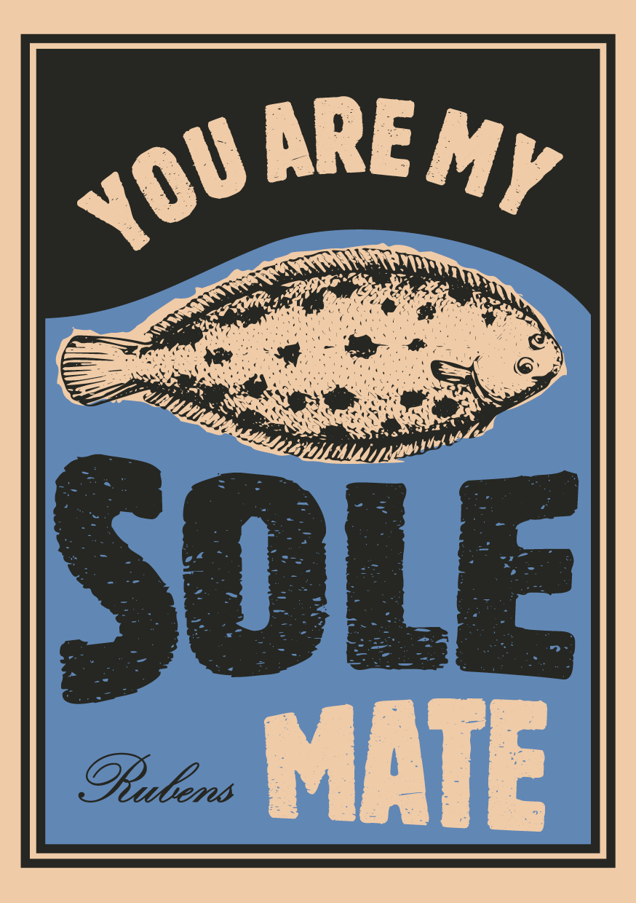
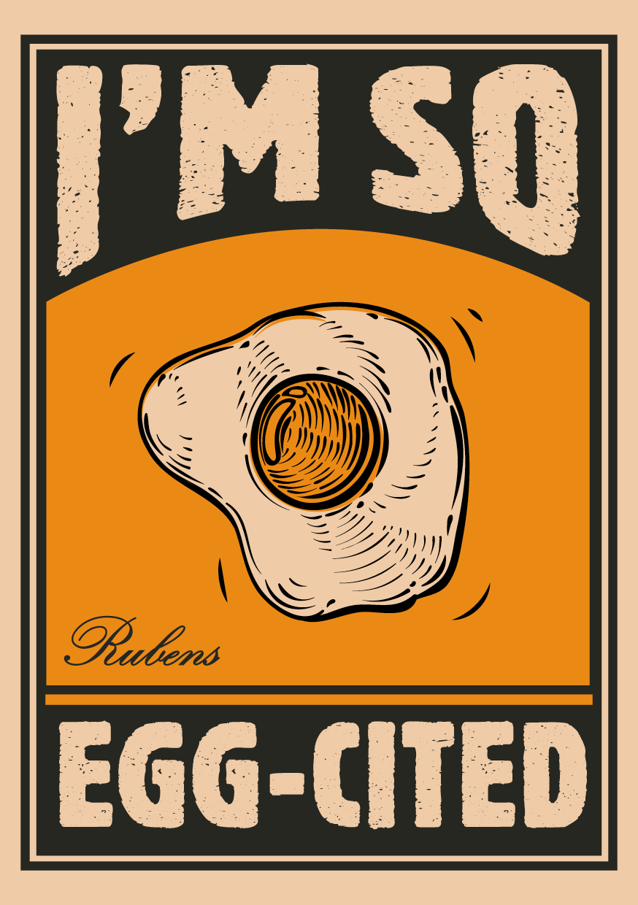
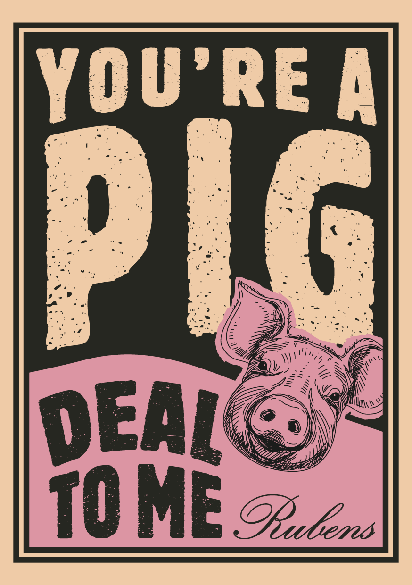

Produits purs
Une histoire de produits et de passion
Nous servons des produits de qualité cultivés de manière artisanale, préparés dans notre propre cuisine.
Goûtez notre fraîcheur incomparable
Nous avons une préférence pour les ingrédients purs et frais. Cultivés de manière durable, livrés frais tous les jours et travaillés de manière artisanale dans notre propre cuisine. Avec passion, terroir et amour pour le métier. C’est comme ça que nous faisons la différence.
Frais, rapide et surtout délicieux
Nous sommes ouverts 7 j/7 et il y a toujours de l’animation à la Brasserie Rubens. Cela nous permet une rotation optimale des ingrédients. Ce flux de travail optimal est le fruit de près d’un siècle d’expérience.
Pur artisanat
La Brasserie Rubens sert autant que possible des produits de qualité durable et de circuits courts dans votre assiette. Des ingrédients purs et honnêtes provenant de producteurs durables et de cultivateurs régionaux.
Cartes postales
Voulez-vous dîner avec moi?
Découvrez l’histoire durable de chaque produit de qualité. Cliquez sur une carte pour l’agrandir.



Nos noms de référence sont votre garantie de qualité
Un aperçu de nos marques de qualité : beurre, crème et lait de la ferme laitière ’t Vogelsteen, huiles et vinaigres de Co&Oil, sel de mer naturel de Marsel, œufs et farine du fermier Olivier, viande de porc du fermier Bart de la boucherie De Heerlijkheid, bœuf de la boucherie Dierendonck, miel de Beelgium, moutarde de Wostyn, condiments de la maison Didden, asperges de Van Gerven, …
Venez goûter